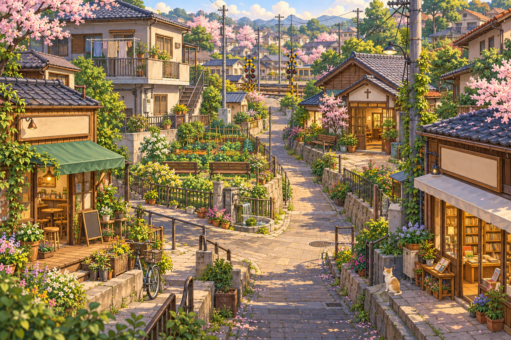

灯
A Little Light
A LIFE IN JAPAN
✦
15
Experience
あ
0
Japanese
❀
0
Culture
♡
0
Connection
⚙
✦
Your journey →

✧
Tokyo
Hanamimachi · Church plant 1
⛶
⌖
♫
Choose a place. Watch your life grow.
↶
↷
+
−
あ
3.0s
Jacob
Studying Japanese
Write the next kana
3.0s
Improve
12 XP
⌂
Neighborhood
あ
Japanese
♡
People
↗
Equipment
✧
Your journey
Japanese
×